codly.bubble
A pointed callout bubble rendered next to a source line, with independent defaults for its paint, dimensions, spacing, and pointer.
Signature
// A codly pointed callout bubble.
codly.bubble(
body,
gap: 0.5em,
pointer-align: "center",
pointer-size: 0.4em,
pointer-height: auto,
pointer-width: auto,
pointer-offset: 0pt,
align: center,
fill: luma(245),
stroke: 0.6pt + luma(80),
inset: (x: 0.5em, y: 0.3em),
outset: 0pt,
radius: 2pt,
width: auto,
line: int,
pointer: int,
placement: "below"
)codly.bubble is the generated element type for pointed callouts. Its body is positional; line and pointer are required named fields when representing the element directly. In normal use, create bubbles by setting pointer on a callouts entry.
Fields
| Field | Type | Default | Meaning |
|---|---|---|---|
body |
content |
required, positional | Content displayed inside the bubble. |
gap |
length | dictionary |
0.5em |
Minimum separation from neighboring bubbles; a length applies on both axes, or use (x: ..., y: ...). |
pointer-align |
"start" | "center" | "end" |
"center" |
Preferred alignment of the bubble around its source character; placement clamps it to the row. |
pointer-size |
length |
0.4em |
Default pointer height and half its base width. |
pointer-height |
length | auto |
auto |
Pointer height; auto uses pointer-size. |
pointer-width |
length | auto |
auto |
Full pointer base width; auto uses twice pointer-size. |
pointer-offset |
length |
0pt |
Horizontal shift of the pointer tip from its source character; positive is right, negative is left, and the tip is clamped to the bubble. |
align |
alignment |
center |
Alignment of the bubble content. |
fill |
paint | none |
luma(245) |
Fill shared by the bubble and pointer. |
stroke |
stroke | none |
0.6pt + luma(80) |
The bubble's single outline, including its pointer. |
inset |
length | dictionary |
(x: 0.5em, y: 0.3em) |
Padding inside the bubble. |
outset |
length | dictionary |
0pt |
Extra paint extent around the body; reserved in the row. |
radius |
length |
2pt |
Bubble corner radius. |
width |
length | ratio | auto |
auto |
Preferred padded body width; auto fits content, bounded by the available row. |
line |
int |
required, named | One-indexed source line attached to the bubble. |
pointer |
int |
required, named | Source character anchor, one-indexed, with 0 at the start of the line. |
placement |
"above" | "below" |
"below" |
Side of the source line on which to place the bubble. |
Behavior
The bubble and arrow use one outline and fill. Content wraps at the available width. Negative dimensions, pointer sizes, insets, and outsets are rejected. Styling defaults set on codly.bubble are inherited by generated bubbles; explicit codly.callout settings and then entry-level bubble settings take precedence. A callout with pointer: none does not produce a bubble.
Rules
codly.bubble-set_(..args) sets styling defaults for generated bubbles. Use it for the style fields above.
codly.bubble-show_(it, ..args) installs a show rule for generated bubbles. Its first argument is a replacement callback or content, not a dictionary of field overrides.
Example: Basic Usage
#import "@preview/codly:2.0.0" as codly
#show: codly.bubble-set_(fill: aqua.lighten(75%), radius: 6pt, width: 125pt)
#codly.new(
```js
let total = subtotal + tax
```,
callouts: ((
line: 1,
pointer: pointer,
body: [The final amount includes tax.],
),),
)Edit & run on your device
The controls supply the example variables. Their definitions are hidden here; Copy code includes the current values and your edits.

Example: Custom Show Rule
#import "@preview/codly:2.0.0" as codly
#show: codly.bubble-show_(it => {
box(stroke: red, it)
})
#codly.new(
```js
let total = subtotal + tax
```,
callouts: ((
line: 1,
pointer: 17,
body: [The final amount includes tax.],
),),
)Edit & run on your device
The highlighted source and output update after you stop typing. Copy code includes your edits.
